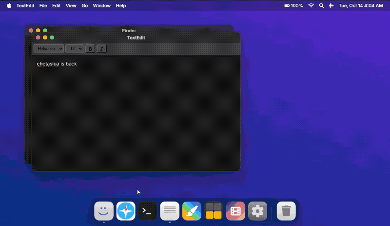
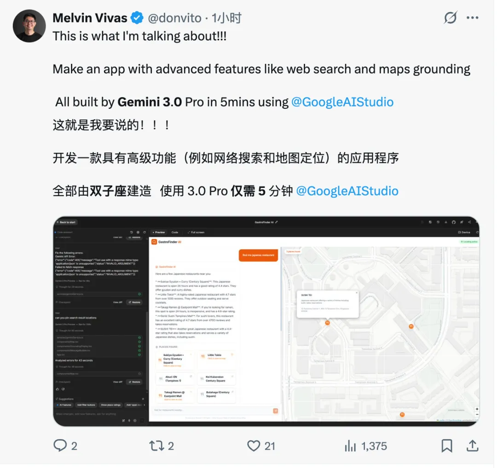
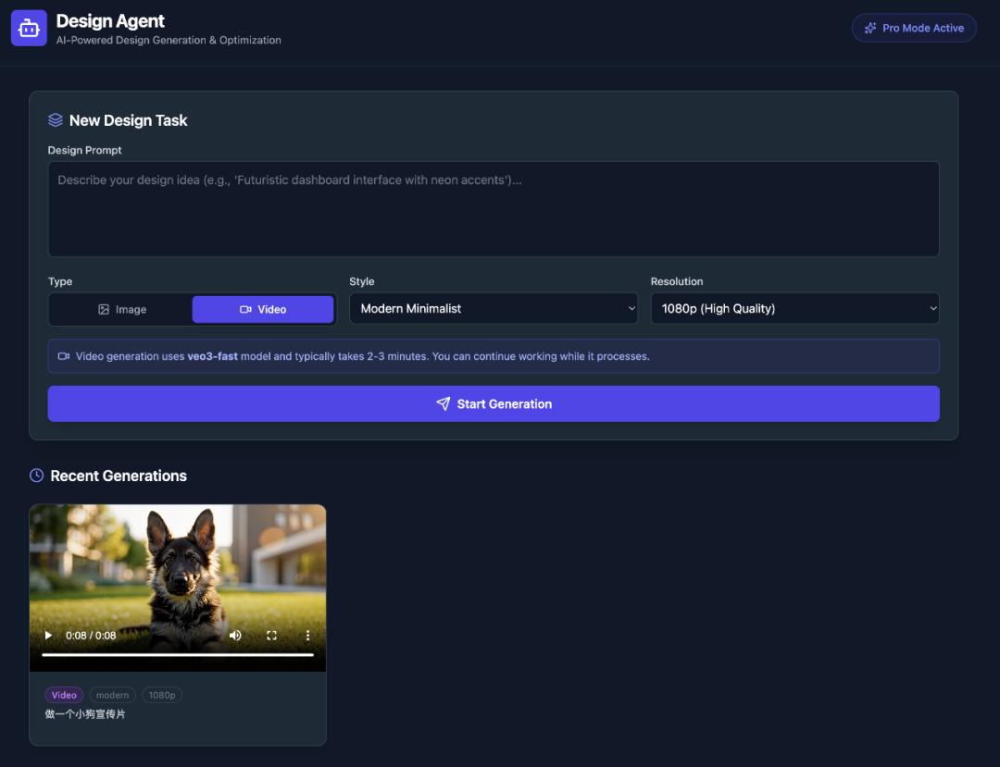

Demo Analysis
热门Demo 分类评分
从有趣度和有用度两个维度，对Gemini 3热门Demo进行系统评估
A. Prompt生成APP类
| 预览 | Demo名称 | 观看量 | 玩法描述 | 体现能力 | 有趣 | 有用 |
|---|---|---|---|---|---|---|
| 虚拟主播 | 284W+ | 读取VRM启动摄像机，面部捕捉+遮罩+遮挡剔除 | 多模态理解 | |||
| 3D乐高编辑器 | 165W+ | 一次性实现UI、代码构建和各项功能 | 编码能力 | |||
| 核电站模拟器 | 45W+ | 核电厂工作原理交互式3D模拟器 | 空间理解 | |||
| 智能视频录制Sparks | 新热 | AI实时分析内容提供提示，原生摄像头集成 | Agent能力 | |||
| 硅谷Dating App | 新热 | 完整交友应用，含AI分身聊天、契合度测评 | 复杂指令 |
豆包1.8 Demo推荐
💡 智能视频录制助手Sparks
利用豆包1.8原生摄像头集成+实时视频流理解能力，录制视频时AI实时分析内容，智能提供下一步提示和思路，自动生成字幕并导出MP4。
帮我做一个视频录制工具，录制时实时分析我说的内容，给我提词提示，录完自动生成字幕
💡 监控视频智能分析
上传1小时+的监控视频，AI通过低帧率快速浏览+Video Cut工具聚焦关键画面高帧率细看，快速定位异常事件（如车辆刮擦肇事时间）。
这是1小时的停车场监控[上传视频]，我的车被刮了，帮我找出是哪辆车什么时候刮的
💡 智能简历定制器
上传职位JD文档，AI自动结构化解析岗位要求，根据用户现有简历智能调整措辞、突出匹配点，一键生成定制简历+求职信。
这是我想投的岗位JD[上传PDF]，这是我的简历[上传]，帮我针对性优化，突出匹配的经历
💡 短视频脚本+分镜生成器
上传产品图片/视频，AI理解产品特点和使用场景，生成抖音/小红书风格的带货脚本，自动规划分镜、台词、BGM建议。
这是我的新品[上传图片]，帮我生成一个15秒的抖音带货脚本，要有网感、能引起购买欲
B. 可交互网页类
| 预览 | Demo名称 | 观看量 | 玩法描述 | 体现能力 | 有趣 | 有用 |
|---|---|---|---|---|---|---|
 | 抖音网页版复刻 | 40W+ | 给网址直接复刻整个网页 | 视觉理解 | ||
| 商业级Landing页面 | 热门 | 完整购票系统、滚动视差、复古特效 | 复杂指令 | |||
| 台球游戏网页 | 10W+ | 黑八十六台球，双人对局+仿真球杆 | 物理模拟 | |||
| 音乐播放器 | 热门 | 模拟黑胶唱片，频谱可视化 | 交互编码 |
豆包1.8 Demo推荐
💡 跨平台智能比价助手
利用豆包1.8的GUI Agent能力，一句话对比多个电商平台价格。AI自动打开浏览器，导航到各平台搜索商品，截图对比价格，生成比价报告。
帮我对比苹果官网和Amazon上全新iPhone16 Pro的价格，告诉我哪个更划算
💡 自动表单填写Agent
利用OS Agent能力，AI自动识别网页表单结构，从用户提供的文档中提取信息，自动填写各类在线申请表（签证、报名、注册等）。
这是我的个人信息文档[上传]，帮我自动填写这个签证申请网页的所有表单
💡 数据可视化大屏生成器
上传Excel/CSV数据，AI自动结构化解析，生成企业级数据可视化大屏，包含多种图表类型、实时刷新效果、响应式布局。
这是我们公司的销售数据[上传Excel]，帮我做一个可以投屏展示的数据大屏，要有科技感
💡 跨平台内容一键发布
利用GUI Agent，AI自动打开多个社媒平台（小红书、头条、微博），根据各平台特点调整文案格式，自动填写并发布内容。
帮我把这篇文章同时发布到小红书、今日头条和微博，根据各平台调整格式和标签
C. 系统与应用类
| 预览 | Demo名称 | 完成时间 | 玩法描述 | 体现能力 | 有趣 | 有用 |
|---|---|---|---|---|---|---|
| Web OS系统 | 热门 | 类Windows系统，含文本编辑器、终端、游戏、画图 | 系统级编码 | |||
 | macOS系统模拟 | 热门 | 一句话生成macOS操作系统 | 界面理解 | ||
 | 地图程序 | 5分钟 | 搜索+定位功能完整地图 | API集成 | ||
 | 设计Agent | 热门 | 输入提示自动生成视频 | 多模态生成 |
豆包1.8 Demo推荐
💡 企业内网系统RPA助手
针对无API接口的老旧系统（银行ERP、内网OA），利用OS Agent的GUI操作能力，AI像人一样看懂屏幕、点击按钮、填写表单，实现流程自动化。
帮我登录公司的OA系统，找到上月的报销单，导出Excel并发送到我的邮箱
💡 剪映视频编辑自动化
利用OS Agent的屏幕视觉理解能力，AI"看懂"剪映界面，自动完成新建项目、导入素材、剪辑、添加字幕、导出等全流程操作。
用剪映帮我把这些照片做成一个视频，加上背景音乐和转场效果，然后导出
💡 全自动开发环境配置
利用OS Agent能力，一句话完成新电脑的开发环境配置：安装IDE、配置Git、安装依赖包、克隆项目、运行测试，全程自动化。
帮我在这台新Mac上配置React开发环境，安装VSCode、Node.js、Git，并克隆我的项目跑起来
💡 跨应用每日工作流自动化
描述每日重复工作流程，AI自动执行跨多个应用的操作：打开邮箱检查邮件、重要内容存到Notion、打开日历查看安排、生成今日待办。
每天早上帮我自动打开邮箱、检查新邮件、把重要的存到Notion、然后打开日历看今天安排
D. 3D/可视化类
| 预览 | Demo名称 | 来源 | 玩法描述 | 体现能力 | 有趣 | 有用 |
|---|---|---|---|---|---|---|
| 宇宙3D可视化 | 官方 | 从质子到可观测宇宙的尺度旅程 | 空间理解 | |||
| 离子体流动可视化 | 官方 | 托卡马克等离子体流动+诗歌 | 科学理解 | |||
 | 奶龙体素场景 | 热门 | 樱花园中的奶龙，多层次细节 | 3D编码 | ||
| 3D隧道躲避游戏 | 热门 | 完整碰撞检测、速度计数器 | 游戏编码 |
豆包1.8 Demo推荐
💡 自动驾驶场景理解分析
利用豆包1.8的2D/3D空间理解能力，分析行车记录仪视频，识别车辆行驶方向、驾驶意图，标注危险场景，可用于自动驾驶数据标注。
分析这段行车记录仪视频[上传]，帮我标注出所有车辆的行驶方向和可能的变道意图
💡 建筑户型3D漫游
上传户型图平面图，AI自动理解空间布局，生成可交互的3D户型模型，支持第一人称漫游、家具摆放模拟、光照变化预览。
这是我新房的户型图[上传]，帮我生成3D模型，我想看看客厅放沙发是什么效果
💡 产品3D展示页生成
上传产品多角度图片，AI理解产品形态和空间结构，生成可360度旋转的3D展示页面，支持缩放、高亮特性、动态标注。
这是我们的新款耳机[上传多角度图片]，帮我做一个3D产品展示页，可以旋转查看
💡 工业场景3D安全分析
上传工厂/工地照片或视频，AI识别空间布局、设备位置、人员分布，自动检测安全隐患（未戴头盔、违规操作），生成可视化安全报告。
这是工地现场的照片[上传]，帮我检查有没有安全隐患，比如未戴头盔、危险区域有人等
E. 多模态理解类
| 预览 | Demo名称 | 观看量 | 玩法描述 | 体现能力 | 有趣 | 有用 |
|---|---|---|---|---|---|---|
| 龙虾漫画 | 200W+ | 图像转线稿制作漫画开头 | 风格转换 | |||
 | 辣椒牛肉面 | 173W+ | 生成带豆芽的辣椒牛肉面图像 | 图像生成 | ||
| 手写食谱解读 | 官方 | 翻译不同语言手写食谱 | 文档理解 | |||
| 比赛分析 | 官方 | 分析匹克球视频生成训练计划 | 视频理解 |
豆包1.8 Demo推荐
💡 2小时网课10分钟看完
上传超长教学视频，利用豆包1.8的1280帧视频理解能力，低帧率快速浏览全片+高帧率聚焦关键内容，生成带时间戳的结构化笔记。
这是一个2小时的Python入门课程[上传视频]，帮我提取重点内容，生成学习笔记，标记哪些地方必须看
💡 生产线产品质检AI眼
连接工厂摄像头视频流，AI连续监控生产线，利用视频运动理解+空间理解能力，实时捕捉微小缺陷瞬间，自动标记问题产品并生成质检报告。
分析这段生产线的监控视频[上传]，找出有瑕疵的产品，标注出缺陷位置和时间
💡 运动动作纠错教练
上传健身/运动视频，利用视频运动理解能力分析动作标准度，用可视化标注指出问题关节角度，生成个性化纠正建议和训练计划。
这是我深蹲的视频[上传]，帮我分析动作哪里不标准，怎么改正，给我一个训练计划
💡 多文档发票智能归档
批量上传发票图片/PDF，利用文档结构化解析能力，AI自动识别票据类型、分类、提取关键信息，生成Excel报销单，检测重复和异常。
这些是我出差的发票[上传多张图片]，帮我整理成报销单，按日期排序，算出总金额
💡 电商商品智能审核
批量上传商家商品图片，AI自动识别图片内容是否合规、是否有违禁词/虚假宣传，对同类商品进行比价分析，生成审核报告。
这是待审核的商品图片[上传多张]，帮我检查有没有违规内容，并与竞品比较价格是否合理
F. Agent/规划类
| 预览 | Demo名称 | 来源 | 玩法描述 | 体现能力 | 有趣 | 有用 |
|---|---|---|---|---|---|---|
| 飞行追踪应用 | 官方 | 自主规划→编码→浏览器验证 | 端到端Agent | |||
| 收件箱整理 | 官方 | 预约本地服务或整理收件箱 | 任务执行 |
豆包1.8 Demo推荐
💡 多文档综合决策助手
上传5份AI项目分析报告+10份行业研究文档，利用豆包1.8的256K超长上下文能力，AI同时理解所有文档内容，交叉对比分析，生成综合决策建议报告。
这是5份不同AI项目的评估报告和10份行业分析[上传]，帮我综合分析哪个项目最值得投资，给出详细理由
💡 50轮对话不丢失的项目顾问
在复杂项目开发中进行50+轮对话，豆包1.8智能清理低价值的调试日志和中间结果，保留关键决策和需求信息，确保第50轮仍然记得第1轮的项目目标。
我们继续刚才的项目讨论，帮我回顾一下最开始的核心需求是什么，以及我们做了哪些关键决策
💡 20步复杂任务稳定执行
执行包含20+步骤的复杂任务链（如：下载数据→清洗→分析→可视化→生成报告→发送邮件），豆包1.8在每一步都保持稳定，遇到错误自动重试，最终100%完成任务。
帮我完成数据分析全流程：从这个API获取数据，清洗后做统计分析，生成可视化图表，写分析报告，最后发到我邮箱
💡 智能行程规划师
一句话描述旅行需求，AI自动调用搜索工具查机票酒店价格、调用地图工具规划路线、调用点评工具筛选餐厅，生成包含预算明细的完整旅行手册。
帮我规划春节去日本7天的行程，预算2万，喜欢美食和动漫，帮我查机票酒店，安排每天的行程
💡 跨系统数据汇总报表
连接ERP、CRM、财务系统等多个数据源，AI自动提取关键数据，处理格式差异，生成统一的管理驾驶舱报表，支持定期自动更新。
帮我从ERP拉取库存数据、从CRM拉取客户数据、从财务系统拉取营收数据，整合成一份月度经营报告